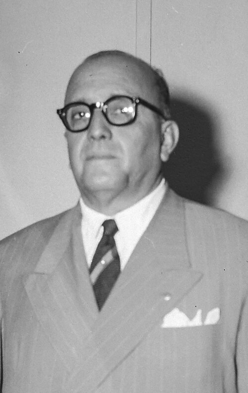

Portal CEEP
Centro Estadual de Educação Profissional Régis Pacheco
Jequié - Bahia
Centro Estadual de Educação Profissional Régis Pacheco
Jequié - Bahia
No início, o colégio foi oficialmente criado por lei em 14 de dezembro de 1948 com o nome de Ginásio Público Régis Pacheco. Ele homenageava o então governador do estado, Régis Pacheco.

Após a estruturação de seu prédio físico, as atividades começaram de fato com a aula inaugural em 19 de março de 1952.
Com a grande demanda regional, o colégio implantou o Curso Normal para formar as primeiras professoras da cidade e do interior baiano, expandindo-se para cursos clássicos e científicos.
Em 1960, consolidado como o maior polo formador de Jequié, a instituição passou a se chamar oficialmente Instituto de Educação Régis Pacheco (IERP).
O IERP virou sinônimo de excelência pedagógica. Marcou a vida cultural da cidade com a sua tradicional Banda Marcial e seus desfiles cívicos.
Anos mais tarde, acompanhando a nova política de Educação Profissional do Estado da Bahia, o antigo instituto abandonou o formato tradicional de Ensino Médio regular para focar na formação de mão de obra qualificada.
A escola mudou de nome e passou a se chamar CEEP Régis Pacheco (Centro Estadual de Educação Profissional em Gestão e Meio Ambiente Régis Pacheco).
Atualmente, a instituição oferece cursos técnicos integrados e subsequentes voltados às demandas econômicas locais.